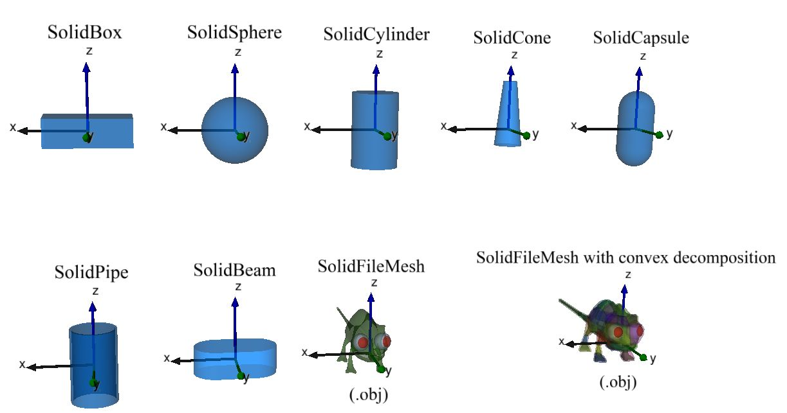

Solids
Modia3D.Solids — Module.module Modia3D.SolidsModule Solids provides data structures and operations for solids, so objects that have a volume and properties associated with the volume. Solid parts can be associated with a Modia3D.Object3D. They are defined with struct Modia3D.Solid consisting of an optional solid geometry:

and other optional properties:
- mass propreties (defined by geometry+material-name, geometry+density, or directly defined mass properties),
- contact material (for elastic response calculation),
- visualization material (for visualization, see below).
Since the solid geometry itself is optional, it is possible to just define a coordinate system with associated mass, center of mass and inertia matrix.
The following functions are provided for a solid geometry geo::Modia3D.AbstractSolidGeometry that is associated with an Object3D object3D:
Modia3D.volume(geo)returns the volume ofgeo.Modia3D.centroid(geo)returns the centroid ofgeo(= center of mass for uniform density).Modia3D.inertiaMatrix(geo, mass)returns the inertia matrix ofgeo.Modia3D.boundingBox!(geo, <other arguments>)returns the Axis Aligned Bounding Box ofgeo.Modia3D.supportPoint(geo, <other arguments>)returns the support point ofgeoalong the desired direction.- isVisible(object3D, renderer),
- dataHasMass(object3D),
- canCollide(object3D),
- and other functions.
Other functions in module Solids:
Modia3D.SolidMaterial(name) returns the solid properties of materialname.
Main developers
Andrea Neumayr and Martin Otter, DLR - Institute of System Dynamics and Control
Modia3D.Solids.contactPairMaterialPalette — Constant.contactPairMaterialPaletteDictionary of contact pair material data, see Modia3D.ElasticContactPairMaterial
Modia3D.Solids.solidMaterialPalette — Constant.const solidMaterialPaletteDictionary of solid material data, see Modia3D.SolidMaterial
material = ElasticContactPairMaterial(;coefficientOfRestitution=0.0, slidingFrictionCoefficient=0.0,
rotationalResistanceCoefficient=0.0, vsmall=0.01, wsmall=0.01)Generates an ElasticContactPairMaterial object by providing the material properties of two objects that are in contact to each other.
Keyword Arguments
- coefficientOfRestitution: Coefficient of restitution between two objects (=0: inelastic ... =1: fully elastic).
- slidingFrictionCoefficient: Kinetic/sliding friction force coefficent between two objects (
>= 0.0). - rotationalResistanceCoefficient: Rotational resistance torque coefficient between two objects (
>= 0.0). Its effect is that the contact torque is computed to reduce the relative angular velocity between two objects. For a ball,rotationalResistanceCoefficientis the (standard) rolling resistance coefficient. vsmallin [m/s]: Used for regularization when computing the unit vector in direction of the relative tangential velocity to avoid a division by zero.wsmallin [rad/s]: Used for regularization when computing the unit vector in direction of the relative angular velocity to avoid a division by zero.
Example
import Modia3D
mat = Modia3D.ElasticContactPairMaterial(coefficientOfRestitution=0.5)Modia3D.Solids.Solid — Type.solid = Modia3D.Solid([geo | nothing],
[solidMaterialName | solidMaterial | mass |
massProperties | nothing] = nothing,
[material = Modia3D.Material() | nothing];
contactMaterial=nothing)Generate a new (rigid) solid with optional solid geometry, mass, visualization and collision properties A solid can be associated to a Modia3D.Object3D.
Arguments
geo::Union{Modia3D.AbstractSolidGeometry,NOTHING}: Optional solid geometry object (such asModia3D.SolidSphere,.SolidBox,.SolidFileMesh).- Mass properties (mass, center of mass, inertia matrix) of geo are computed by one of:
solidMaterialName::AbstractString: Name of a solid material defined in dictionaryModia3D.solidMaterialPalette(computed by geo and density of solid material)solidMaterial::Modia3D.SolidMaterial: Solid material properties object (computed by geo and solidMaterial.density)mass::Number: Mass in kg (computed by geo and mass).massProperties::Modia3D.MassProperties: Mass properties (mass, center of mass, inertia matrix) are explicitly given.nothing: geo has no mass.
material::Union{Modia3D.Material,NOTHING}: Visualization material ofgeo. Ifmaterial=nothing, geo is not shown in the visualization.contactMaterial::Union{Modia3D.AbstractContactMaterial,NOTHING}: Contact material ofgeo. IfcontactMaterial=nothing, no collision handling takes place for geo.
Examples
import Modia3D
sbox = Modia3D.SolidBox(1.0,2.0,3.0)
smat = Modia3D.SolidMaterial(density = 2700)
vmat = Modia3D.Material(color="Blue", transparency=0.5)
cmat = Modia3D.ContactMaterialElastic(c=1e5, d=100)
massProperties = Modia3D.MassProperties(m=0.1, Ixx=1.0, Iyy=2.0, Izz=3.0)
solid1 = Modia3D.Solid(sbox, "Aluminium", vmat)
solid2 = Modia3D.Solid(sbox, smat , vmat)
solid3 = Modia3D.Solid(sbox, 2.1 , vmat )
solid4 = Modia3D.Solid(sbox, nothing; contactMaterial=cmat)
solid5 = Modia3D.Solid(Modia3D.SolidSphere(0.1), massProperties, vmat; contactMaterial=cmat)
solid6 = Modia3D.Solid(nothing, massProperties)Modia3D.Solids.SolidMaterial — Type.material = SolidMaterial(;kwargs...)Generates a SolidMaterial object by providing the material properties of a solid with keyword arguments. Arguments that are not provided have value = NaN.
Keyword Arguments
densityin [kg/m^3]: Density, see Wikipedia.YoungsModulusin [Pa]: Youngs's modulus, see Wikipedia.PoissonsRatio: Poisson's ratio, see Wikipedia.meltingPointin [K]: Melting point, see Wikipedia. If the material is destroyed before its melting point (e.g. wood that is burning) thenmeltingPointis the temperature when destruction of the solid starts.specificHeatCapacityin [J/(kg.K)]: Specific heat capacity, see Wikipedia.thermalConductivityin [W/(m.K)]: Thermal conductivity, see Wikipedia and List of thermal conductivitieslinearThermalExpansionCoefficient::Float64in [1/K]: Linear thermal expansion coefficient, see Wikipedia.
Example
import Modia3D
mat1 = Modia3D.SolidMaterial(density=3000.0, YoungsModulus=2e11)Modia3D.Solids.boundingBox! — Method.boundingBox!(geo, AABB, r_abs, R_abs; tight=true, scaleFactor=0.01)Returns the Axis Aligned Bounding Box of solid geo in argument AABB.
Arguments
geo::Modia3D.AbstractSolidGeometry: Solid geometry object.AABB::Modia3D.BoundingBox: On return, update AABB with the actual Axis Aligned Bounding Box of solidgeo.r_abs::AbstractVector: Absolute position vector ofgeoreference frame.R_abs::AbstractMatrix: Rotation matrix to rotate world frame ingeoreference frame.tight::Bool: If true, return the tightest AABB. If false return an AABB that is scaleFactor bigger than the best fitting AABB (for example, scaleFactor=0.1 means that the returned AABB is 10 percent bigger than the best fitting AABB).scaleFactor::Float64: Iftight=false, the returned AABB isscaleFactorbigger than the best fitting AABB.
Modia3D.Solids.centroid — Method.r = centroid(geo)Return position vector from solid reference frame to centroid of solid geo::Modia3D.AbstractSolidGeometry in [m]. If the solid has a uniform density, the centroid is identical to the center of mass.
Modia3D.Solids.inertiaMatrix — Method.I = inertiaMatrix(geo, mass)
Return inertia matrix I of solid geo::Modia3D.AbstractSolidGeometry with respect to the solid reference frame in [kg*m^2] as SMatrix{3,3,Float64,9}. Hereby it is assumed that geo has uniform density and mass is the mass of geo in [kg].
Modia3D.Solids.supportPoint — Method.r = supportPoint(geo, r_abs, R_abs, e)Return the absolute position vector r from world frame to support point of solid geo, resolved in world frame in [m]. The support point is the point of solid geo that is the most extreme in direction of unit vector e.
Arguments
geo::Modia3D.AbstractSolidGeometry: Solid geometry object.r_abs::AbstractVector: Absolute position vector ofgeoreference frame.R_abs::AbstractMatrix: Rotation matrix to rotate world frame ingeoreference frame.e::AbstractVector: Unit vector pointing into the desired direction.
Modia3D.Solids.volume — Method.V = volume(geo)Return the volume of the solid geometry geo::Modia3D.AbstractSolidGeometry in [m^3].